Wunderwelt der Grafik
Das Basic des C 128 verfügt über wunderbare Befehle zur Nutzung der HiRes-Grafik. Wir zeigen Ihnen Anwendung und Programmierung dieser HiRes-Grafik.
Hier geht es um die hochauflösende und die Mehrfarbengrafik, die wir uns im Detail ansehen werden. 14 Befehle steuern im Basic 7.0 des C 128 die Grafikmöglichkeiten im engeren Sinn. Zählt man noch die Sprite- und Shapeanweisungen hinzu, dann verfügen wir über 27 grafische Werkzeuge in Basic. Wir erklären Ihnen die Anwendung und Programmierung jedes einzelnen dieser 14 Befehle, die Ihnen das Arbeiten mit der hochauflösenden Grafik erleichtern.
GRAPHIC
Dieser Befehl dient – der Name sagt es schon – zum Umschalten in die verschiedenen Grafik- und Textmodi unseres Computers. Mittels
GRAPHIC A, B, C
können je nach den Kennungen A, B und C eine ganze Reihe von Optionen angewählt werden.
Die Kennung A aktiviert den Grafik-Modus:
A=0 Der Textbildschirm – und zwar derjenige mit 40 Zeichen Zeilenbreite – wird eingeschaltet
A=1 Die hochauflösende Grafik wird aktiviert
A=2 Ein »Splitscreen«, also ein Bildschirm, auf dem sowohl 40-Zeichen-Text als auch hochauflösende Grafik zulässig sind, kann damit eingeschaltet werden
A=3 Die Mehrfarbengrafik (auch Multicolorgrafik genannt) ist angewählt
A=4 Auch dieser Parameter erlaubt die Einrichtung eines Splitscreen. Diesmal erscheint zum 40-Zeichen-Text-Schirm noch die Mehrfarben-Grafik
A=5 Schaltet auf 80 Zeichen um.
Der Parameter B entscheidet darüber, ob der ausgewählte Bildschirm gelöscht wird oder nicht:
B=0 Es wird nicht gelöscht
B=1 Der Bildschirm (in den Grafik-Modi 1 bis 4 auch die Bit-Map genannt) wird gelöscht.
Der Parameter C spielt lediglich in den Modi 2 und 4 eine Rolle (Splitscreen). Er bestimmt, an welcher Zeile der Textbildschirm eingeblendet werden soll. Die Splitscreens sind so eingerichtet, daß immer von dieser Zeile an abwärts Textbereich existiert. Voreingestellt – und daher muß C nicht immer angegeben werden – ist die Zeile 19.
Worin unterscheiden sich diese Grafik-Modi? Wenn Sie im C 64-Modus Grafik programmieren wollen, dann kommen Sie ohne einen sehr tiefen Einblick in die Speicherorganisation des Computers nicht sehr weit. Auch wenn uns das der C 128 durch sein leistungsfähigeres Basic erspart: Ein wenig sollten Sie dennoch wissen.
Die Grafik-Modi
40-Zeichen-Text
Zur Darstellung des 40-Zeichen-Bildschirms belegt der Computer zwei Speicherbereiche:
1024 bis 2023 Bildschirm-RAM und
55296 bis 56295 Bildschirm-Farben-RAM
In jeweils 1000 Speicherstellen (40 Spalten mal 25 Zeilen) befindet sich die Text-Information, die auf dem Monitor oder Fernseher zu sehen ist. Die Aufteilung dieser beiden Speicherbereiche finden Sie in Ihrem Handbuch auf den Seiten 5-80 und 5-82. Wenn Sie dafür sorgen, daß in der linken oberen Ecke Ihres Bildschirms ein A steht, dann finden Sie durch
BANK 0:PRINT PEEK(1024)
die Zahl 1 in der Speicherstelle 1024. Das ist der Bildschirm-Code des Zeichens »A«. Umgekehrt können Sie durch POKEn auch Zeichen in den Bildschirmspeicher schreiben:
BANK 0:POKE 1025,2
schreibt ein »B« an die zweite Position der ersten Zeile. Im Handbuch sind die Bildschirm-Codes der Zeichen zu finden. Der andere Speicherbereich ab 55296 versieht die Zeichen mit Farbe. In den alten Versionen des C 64 mußten zwei POKEs eingegeben werden, um ein Zeichen sichtbar werden zu lassen. Der zweite POKE diente zum Einschreiben eines Farb-Codes in die dazugehörige Bildschirmfarbspeicherstelle. Hier ist das nicht nötig: Der Speicherbereich ab 55296 wird automatisch mit entsprechenden Werten gefüllt: Die unteren 4 Bit enthalten nach dem Einschalten die Zahl 13, was dem Code der Farbe hellgrün (vermindert um 1) entspricht. Es steht Ihnen aber frei, bunte Buchstaben zu erzeugen. Dazu ist lediglich ein anderer Farb-Code in die zum Bildschirmspeicher gehörige Farbzelle zu schreiben. Bild 1 soll dieses Zusammenspiel beider Speicherbereiche verdeutlichen:
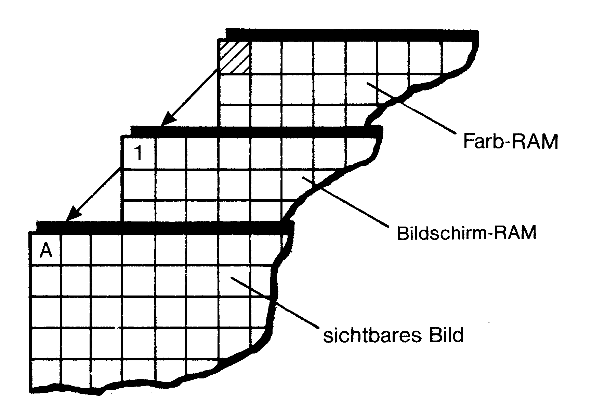
Übrigens, falls Ihnen die aktuelle Cursorfarbe nicht mehr gefallen sollte, dann können Sie sie durch
BANK 0:POKE 241,Farbcode
ändern. Auch alle danach geschriebenen Zeichen erhalten die so gewählte neue Farbe.
Nun wissen wir zwar, daß zum Darstellen eines Zeichens auf dem Bildschirm ein Zeichen-Code im Bildschirmspeicher und ein Farb-Code im dazugehörigen Farbspeicher nötig sind, so ganz befriedigend ist das als Erklärung aber noch nicht. Woher weiß unser Computer eigentlich, was er abbilden soll, wenn beispielsweise der Zeichen-Code 1 in der Speicherstelle 1024 steht? Für jedes Zeichen, das der Computer darstellen kann, gibt es im sogenannten Character-ROM ein Muster. Der Zeichen-Code dient als Zeiger auf das erste Byte eines solchen Musters. Die 1 deutet auf das erste Zeichenmuster, das zum großen Buchstaben »A« gehört. Es gibt übrigens auch das nullte Zeichen, den »Klammeraffen«.
Jedem Zeichen sind im Character-ROM 8 Byte zugeordnet. Ein Beispiel zeigt Bild 2.
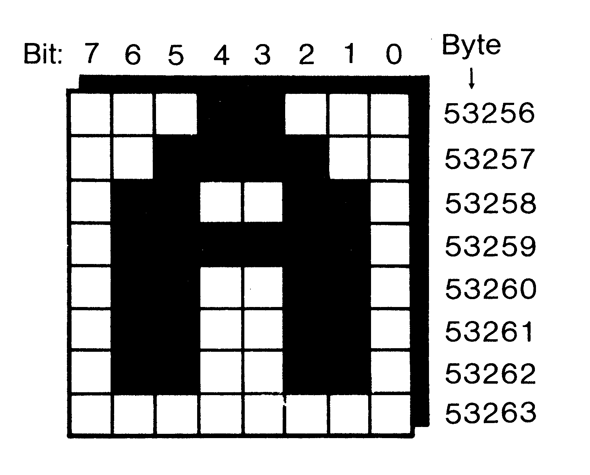
Daraus ist zu ersehen, daß jedes Zeichen als gesetzte oder nicht gesetzte Punkte in einem 8 x 8-Rasterfeld definiert ist. Falls Sie über einen guten Monitor verfügen und Kontrast sowie Helligkeit entsprechend einstellen, dann können Sie diese Punkte auch auf dem Bildschirm erkennen.
Zwei Fragen stellen sich aus dieser Erkenntnis heraus:
— Kann man eigene Zeichen erstellen und verwenden?
— Gibt es eine Möglichkeit, statt jeweils auf solch ein 8 x 8-Raster auch auf einzelne Punkte einzuwirken?
Die erste Frage wird im Abschnitt über den VIC-Chip beantwortet. Hier sei nur erwähnt, daß es möglich ist.
Die zweite Frage führt uns zu den anderen Grafik-Modi.
Der Hochauflösungsmodus
Wir hatten festgestellt, daß wir im Textmodus (40 Zeichen) immer nur (beispielsweise durch POKE 1024,1) auf ein 8 x 8-Punkte-Raster zugreifen können. Die Auflösung unseres Bildschirms beträgt in diesem Zustand 40 x 25 Zeichen. Es gibt noch einige Tricks, eine sogenannte Viertelpunktgrafik zu entwerfen, in der die auf der Tastatur vorgegebenen Grafikzeichen (beispielsweise mit <CBM+C> zu erhalten) geschickt verwendet werden. Es juckt aber in den Fingern, jeden Bildpunkt eines solchen 8 x 8-Zeichens einzeln anzusprechen. Das ist tatsächlich mittels dem Grafikmodus 1 (und auch 2) möglich, der durch GRAPHIC1 anwählbar ist. Damit erhöht sich die Auflösung ganz erheblich:
320 horizontale und 200 vertikale Bildschirmpositionen stehen uns hier zur Verfügung. Wir haben den sogenannten Bit-Map-Modus eingeschaltet.
Das Prinzip ist dabei folgendes: Jedem Bildpunkt entspricht ein Bit eines Speicherbereiches, der Bit-Map. Ist in dieser Bit-Map ein Bit gleich 1, dann erscheint an der dazugehörigen Bildschirmposition ein Punkt (das ist wie das Eintragen von Geländeeinzelheiten in eine Landkarte, daher der Name Map = Landkarte). Jeweils 8 Bit ergeben ein Byte, woraus sich auf die Größe der Bit-Map schließen läßt: (320*200)/8 = 8000 Byte.
Alles, was auf dem Bildschirm erscheint, ist der Inhalt dieser Bit-Map, die durch den GRAPHIC1-Befehl eingerichtet wird. Wo befindet sie sich? Wenn Sie sich mal vor und nach dem Einrichten der Bit-Map durch PRINT FRE(0) den freien Speicherplatz ausgeben lassen, dann erkennen Sie folgendes: In der BANK 0, also dem Basic-Textspeicher, wird einiges verändert. Normalerweise (also ohne Bit-Map) beginnt der Basic-Text in Speicherstelle $1C00 (dezimal 7168). GRAPHIC1 schiebt den Textstart (und ein eventuell schon im Speicher befindliches Programm) in Windeseile bis $4000 (dezimal 16384). Die Bit-Map beginnt ab $2000 (dezimal 8192).
GRAPHIC1 legt aber nicht nur eine Bit-Map an und schaltet den Videochip auf den speziellen Grafikmodus um, sondern definiert auch ein Koordinatensystem auf dem Bildschirm, das sich aus der Bit-Anordnung des Bildes ergibt. Sehen Sie dazu das Bild 3.
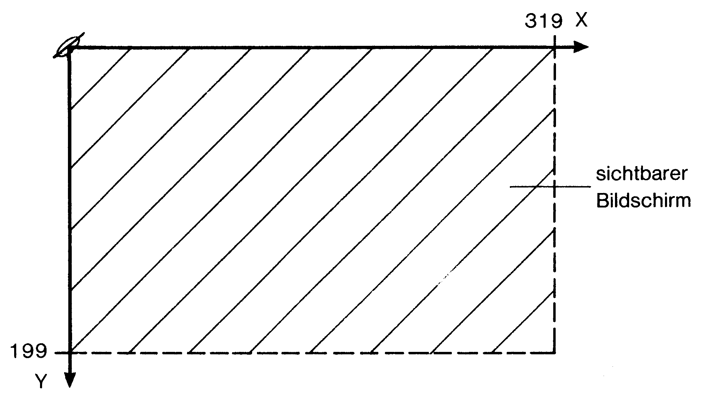
Wir finden einen Koordinatenursprung in der linken oberen Bildecke, eine nach unten weisende Y-Achse und eine nach rechts verlaufende X-Achse: Ein solches linkshändiges System bereitet dem Anwender manchmal einige Probleme, weil in der Mathematik ein rechtshändiges System eingesetzt ist (da wäre dann der Ursprung unten links zu finden und die Y-Achse verliefe nach oben). Alle Zeichenbefehle beziehen sich im Normalfall auf die so festgelegten Koordinaten. Ein Befehl
DRAW 1,0,0 TO 319,199
(zu den Einzelheiten kommen wir noch) zeichnet also eine Linie von links oben nach rechts unten.
Wir haben noch nicht erwähnt, wie der Computer die Farben in diesem Modus festlegt. Das soll beim COLOR-Befehl behandelt werden. Auf Koordinatensysteme kommen wir beim SCALE-Befehl noch einmal zurück.
Die Mehrfarbengrafik
Während in den Grafik-Modi 1 und 2 jedes gesetzte Bit in der Bit-Map einen Bildpunkt nach sich zieht, ist die Mehrfarbengrafik (Modi 3 und 4) immer auf Bit-Paare orientiert. Die Bit-Map hat zwar als Karte des Bildschirminhaltes ihre Bedeutung beibehalten, aber sie wird vom VIC-Chip nun anders gelesen. Es existieren vier Möglichkeiten von Bitkombinationen zu je zwei Bit:
00 Hintergrund
01 Farbe 1
10 Farbe 2
11 Farbe 3
Auf welche Weise welche Farbe angesprochen wird, soll uns beim COLOR-Befehl weiter beschäftigen. Hier interessiert uns die Auswirkung auf die Auflösung.
Weil in der X-Richtung nun nur noch Bit-Paare zählen, halbiert sich die Auflösung. Das Koordinatensystem der Multicolorgrafik ist ebenso aufgebaut wie das der hochauflösenden Grafik, lediglich in X-Richtung stehen uns nur noch 160 Positionen zur Verfügung. Bild 4 zeigt uns dieses neue Koordinatensystem.
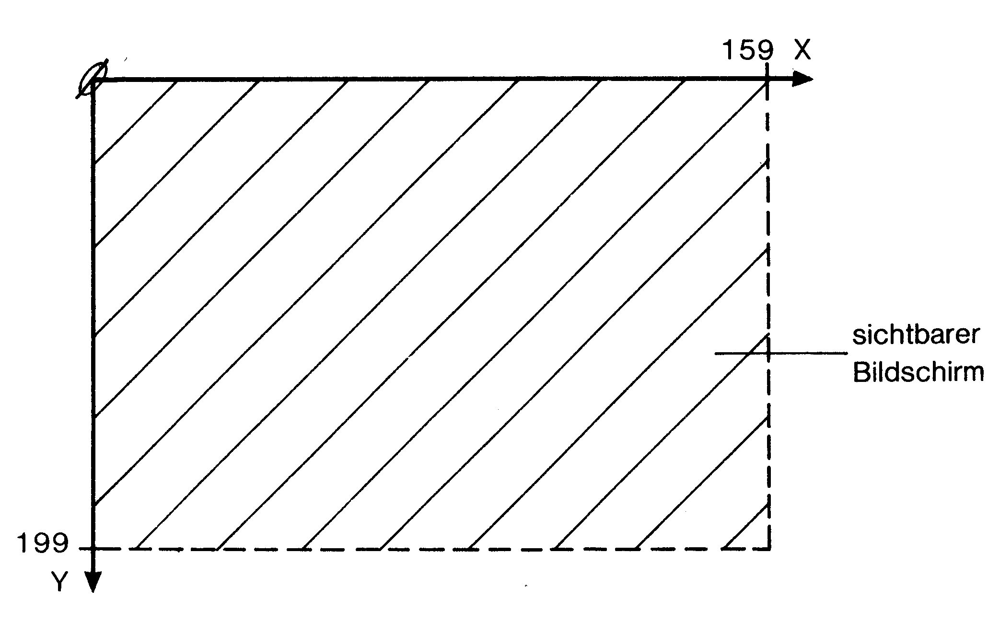
Die Splitscreens
In den Grafik-Modi 2 und 4 wird der Bildschirminhalt durch jeweils zwei verschiedene Betriebsarten des VIC-Chip gewonnen. Im oberen Teil sehen wir den Inhalt der Bit-Map, im unteren aber 40-Zeichen-Text. Dies wird erreicht durch die sogenannte Rasterzeilenunterbrechung. Auch im C 64-Modus kann mittels eines Maschinenprogramms diese Aufteilung des Bildschirms programmiert werden. Dabei gab es immer ein Problem, das mit der Bearbeitungszeit zusammenhing. Die Rasterzeilenunterbrechung und die normale Unterbrechung (die 60mal pro Sekunde stattfindet) durften sich nicht gegenseitig in die Quere kommen. Diese Schwierigkeit konnte im Programmbetrieb meistens ganz gut gelöst werden. Im Direktmodus führten aber Cursorbewegungen und die Arbeit mit Sprites oft zu einer zittrigen Grenze der beiden Darstellungsmodi auf dem Bildschirm. Dasselbe Problem scheint im C 128-Modus dafür verantwortlich zu sein, daß diese Grenze manchmal geradezu extrem gestört wird, beispielsweise beim Steuern von Sprites über die Splitscreengrenze im Grafikmodus 4.
Beim Einschalten eines Splitscreen befindet sich der Textcursor nicht automatisch im Textbereich. Er muß erst dorthin gefahren werden. Zwei Möglichkeiten bieten sich hier an: Zum einen kann ein PRINT AT simuliert werden durch:
BANK 15:SYS 65520,,Zeile,Spalte
Zum anderen bietet sich die Definition eines Bildschirmfensters unter Benutzung des WINDOW-Befehls an. Man legt dann einfach den gesamten Textbereich als WINDOW fest. Ist also keine spezielle Trennzeile angegeben worden (dann tritt der Übergang von Grafik zu Text in Zeile 19 ein), kann das durch
WINDOW 0,20,39,24
geschehen. Übrigens bleibt das Bildschirmfenster auch nach einer Rückkehr in den Textmodus erhalten. Wird das nicht gewünscht, kann durch
WINDOW 0,0,39,24
der gesamte Bildschirm wieder benutzt werden.
Der 80-Zeichen-Textmodus
Sollten Sie stolzer Besitzer eines 80-Zeichen-Monitors sein, dann können Sie durch GRAPHIC5 die Textausgaben auf dessen Bildschirm lenken. Interessanterweise ist es nun möglich, zwei getrennte Anzeigen zu erhalten, beispielsweise die Multicolorgrafik auf dem 40-Zeichen-Schirm und die Textausgaben auf dem 80-Zeichen-Monitor. Die Splitscreen-Optionen braucht man dann nicht mehr – sie sind sogar hinderlich, weil sie die Ausgabe von Text wieder auf den 40-Zeichen-Schirm lenken und uns die Mühe machen, den verringerten Grafikausgabebereich zu berücksichtigen (die Y-Achse wird ja nun ab Zeile 19 überdeckt vom Textbereich).
Die Textdarstellung auf dem 80-Zeichen-Schirm folgt etwa dem gleichen Prinzip, wie wir es schon beim 40-Zeichen-Text kennengelernt haben – mit folgenden Unterschieden:
Zunächst benutzt unser Computer jetzt einen anderen Videobaustein, den VDC 8563. Wir werden diesen Videochip an anderer Stelle noch etwas genauer kennenlernen.
Der Bildschirmspeicher ist nirgendwo im Bereich der 128 KByte unseres Computers zu finden, die wir direkt ansprechen können (durch PEEK oder mittels Monitor). Ebensowenig werden wir einen Hinweis auf den Farbspeicher finden. Woran liegt das? Immerhin brauchen wir doch 80 x 25 Byte, also 2000 für das Bildschirm-RAM und ebenso viele Byte für die Farbzellen. Da sind wir auf eine Besonderheit des VDC-Chip gestoßen: Er benutzt einen eigenen 16-KByte-RAM-Bereich, der völlig getrennt vom normalen Speicher existiert und von uns nur über zwei Speicherstellen ansprechbar ist. Welche das sind und wie man sie benutzt, soll ebenfalls beim VDC besprochen werden. Hier nur die Aufteilung dieses Speichers:
0000 bis 2047 Bildschirm-RAM
2048 bis 4095 Attribut-RAM
4096 bis 8191 frei
8192 bis 16385 Zeichenspeicher
Zur Bedeutung des Bildschirm-RAM braucht nichts mehr gesagt zu werden. Das Attribut-RAM entspricht etwa dem Bildschirmfarbspeicher, birgt aber noch mehr Möglichkeiten in sich. Weil wir alle Aspekte der Farbgebung der anderen Modi beim COLOR-Befehl behandeln werden, mit diesem Befehl aber das VDC-Attribut-RAM nicht erschöpfend erfaßt werden kann, soll hier diese VDC-Spezialität erklärt werden. Zuvor noch ein paar Worte zum Zeichenspeicher. Während im 40-Zeichen-Textmodus ein Zeichenmuster aus dem Character-ROM entnommen wird, ist das im 80-Zeichen-Textmodus nicht der Fall. Vielmehr findet hier schon in der Einschaltphase ein Kopieren aller Zeichen in den speziellen VDC-RAM statt. Von dort stammen nun auch die Zeichenmuster. Sie kennen sicher schon die Erscheinung, daß beispielsweise beim Umschalten auf den DIN-Zeichensatz (mit der <CAPS/LOCK>-Taste) einige Zeit verstreicht, bis alle Zeichen im neuen Gewand zu sehen sind: Das liegt daran, daß der gesamte Zeichensatz umkopiert werden muß. Im Bereich 8192 bis 16385 finden sich danach nur noch die DIN-Zeichenmuster.
Es wird sicher Ihrer Aufmerksamkeit nicht entgangen sein, daß hier die Rede von RAM ist im Gegensatz zum Zeichen-ROM, das bei der 40-Zeichen-Textdarstellung eine Rolle spielt. Wenn wir wissen, wie man dieses VDC-RAM ansprechen kann, wird uns nichts daran hindern, auch in den Speicherbereich des Zeichensatzes hineinzuschreiben. So können dann eigene Zeichen definiert werden.
Kommen wir nun aber zurück zum Attribut-RAM. Jeder Bildschirmspeicherstelle entspricht ein Byte dieses Attributbereiches. Durch dieses Byte aber wird noch mehr gesteuert als die Farbe, was Sie am Aufbau solch einer Speicherstelle erkennen können (siehe Bild 5).
| Bit: | 7 | 6 | 5 | 4 | 3 | 2 | 1 | 0 |
|---|---|---|---|---|---|---|---|---|
| Name: | ALT | RVS | UL | FL | R | G | B | I |
Die Bits 0 bis 3 bestimmen die Farbe, was wir gleich noch untersuchen wollen.
Bit 4: Ist hier eine 1 zu finden, dann blinkt das Zeichen.
Bit 5: Das Zeichen ist unterstrichen, wenn hier eine 1 enthalten ist.
Bit 6: Hiermit wird ein Aspekt der Zeichendarstellung »doppelt gemoppelt«: Die Revers-Darstellung. Eigentlich kann nämlich durch Einschreiben einer »1« an diese Stelle genau dasselbe erreicht werden, wie durch das ansonsten etwas speicherfressende Verfahren eines gesonderten Zeichenmusters, mit dem momentan die inversen Zeichen gezeichnet werden.
Bit 7: Im Gegensatz zum 40-Zeichen-Textmodus, der die Groß- und Kleinschreibung nur durch Umschalten (per <CBM+SHIFT>-Taste) erlaubt, können im 80-Zeichen-Modus beide Zeichensätze gleichzeitig verwendet werden. Welches von den beiden möglichen Zeichen auf dem Bildschirm zu sehen ist, entscheidet dieses Bit. Liegt hier eine 1 vor, dann stammt das sichtbare Muster aus dem zweiten Zeichensatz.
Nun zu den Farb-Bits. Im Bild 5 sind diese mit R, G, B und I bezeichnet. Dabei steht R für Rot, G für Grün, B für Blau und schließlich I für Intensität. Je nach Mischung der Signale, die durch unterschiedliche Bitbelegungen der vier Bit erzeugt werden, ergeben sich die 15 möglichen Farbdarstellungen. Bild 6 zeigt alle Kombinationen.
| Bit: | 3 | 2 | 1 | 0 | |||
|---|---|---|---|---|---|---|---|
| R | G | B | I | dez. | Farbe | entspricht Farbcode im 40-Z.-Modus | |
| 0 | 0 | 0 | 0 | 0 | schwarz | 1 | |
| 0 | 0 | 0 | 1 | 1 | d’grau | 12 | |
| 0 | 0 | 1 | 0 | 2 | blau | 7 | |
| 0 | 0 | 1 | 1 | 3 | h’blau | 15 | |
| 0 | 1 | 0 | 0 | 4 | grün | 6 | |
| 0 | 1 | 0 | 1 | 5 | h’grün | 14 | |
| 0 | 1 | 1 | 0 | 6 | türkis | 4 | |
| 0 | 1 | 1 | 1 | 7 | orange | 9 | |
| 1 | 0 | 0 | 0 | 8 | rot | 3 | |
| 1 | 0 | 0 | 1 | 9 | h’rot | 11 | |
| 1 | 0 | 1 | 0 | 10 | lila | 13 | |
| 1 | 0 | 1 | 1 | 11 | violett | 5 | |
| 1 | 1 | 0 | 0 | 12 | braun | 10 | |
| 1 | 1 | 0 | 1 | 13 | gelb | 8 | |
| 1 | 1 | 1 | 0 | 14 | h’grau | 16 | |
| 1 | 1 | 1 | 1 | 15 | weiß | 2 | |
All diese einzelnen Aspekte, die das Attribut-RAM erlaubt, können durch CHR$- oder/und ESC-Befehle angesteuert werden. So erzeugt
PRINT CHR$(2)"A"
ein unterstrichenes und
PRINT CHR$(27)+"F";"A"
ein blinkendes A. Das Handbuch gibt ab Seite 4-4 erschöpfend darüber Auskunft.
Eine kleine Besonderheit ist allerdings vergessen worden:
Falls Sie einmal <CTRL+S> drücken, während ein Programm läuft, hält dieses sofort an. Damit haben wir eine Pausentaste im Computer. Erst nach einem beliebigen anderen Tastendruck arbeitet der Computer weiter.
GRAPHIC CLR
Eine Version des GRAPHIC-Befehls wurde Ihnen bisher noch verschwiegen. Mit GRAPHIC CLR führen Sie den Computer wieder in den reinen Textmodus zurück. Sie werden sagen, daß dazu doch die Befehle GRAPHIC0 oder GRAPHIC5 ausreichen. Das stimmt aber nur in Grenzen. Falls einmal einer der Grafik-Modi 1 bis 4 eingeschaltet wurde, damit also der ganze Speicher in BANK 0 verändert ist, bleibt die Bit-Map und der Basic-Start bei $4000 erhalten. Das erkennen Sie beispielsweise daran, daß – falls Sie nicht mit einer der Löschfunktionen das Bitmuster gelöscht haben – durch beispielsweise GRAPHIC1 auf dem Bildschirm immer noch das Grafikbild auftaucht, das Sie vorher einmal erstellt haben.
Erst durch den Befehl GRAPHIC CLR krempeln Sie die BANK 0 unseres Speichers wieder völlig um. Der Basic-Start wandert wieder nach $1C00, die Bit-Map wird überschrieben.
COLOR
Wir kommen nun zur Farbgebung in den verschiedenen Modi. Im Befehl
COLOR A,B
bedeutet A das folgende:
A=0 Hintergrund im 40-Zeichen-Textmodus und in den Grafik-Modi.
A=1 Vordergrundfarbe in den Grafik-Modi. Im Multicolormodus wird damit die Farbe der Bitkombination 01 belegt.
A=2 Multicolorfarbe 1. Das betrifft die Farbe der Bit-Kombination 10.
A=3 Multicolorfarbe 2, die sich auf die Bitkombination 11 bezieht.
A=4 Farbe des Bildschirmrahmens.
A=5 Zeichenfarbe im Textmodus. Damit wird sowohl im 40- als auch im 80-Zeichen-Text die Zeichenfarbe bestimmt.
A=6 Hintergrund des 80-Zeichen-Bildschirms.
B ist der Farbcode. Je nach Fabrikat, eingestelltem Kontrast, Helligkeit und anderen Gerätespezifica variiert die dargestellte Farbe. Der Code und die angegebenen Farben dienen daher eher als ungefährer Richtwert. Bild 7 zeigt die Zuordnung der verschiedenen Werte.
| Farbe | Code | Farbe | Code |
|---|---|---|---|
| Schwarz | 1 | Hellbraun | 9 |
| Weiß | 2 | Braun | 10 |
| Rot | 3 | Rosa | 11 |
| Türkis | 4 | Dunkelgrau | 12 |
| Violett | 5 | Grau | 13 |
| Grün | 6 | Hellgrün | 14 |
| Blau | 7 | Hellblau | 15 |
| Gelb | 8 | Hellgrau | 16 |
Sehen wir uns nun die Farbgebung etwas genauer an:
Die Farbspeicher
Sowohl einzelne Speicherstellen als auch größere RAM-Bereiche spielen eine Rolle bei der Farbzuordnung. Einen RAM-Bereich haben wir schon beim Textmodus erwähnt: Den Bildschirmfarbenspeicher zwischen 55296 und 56295 ($D800 bis $DBE7). Anders als beim VDC-Attribut-RAM spielen hier nur die Bits 0 bis 3 eine Rolle. Die oberen 4 Bit sind unbenutzt und unterliegen einem ständigen Wandel. Versuchen Sie einmal mittels Monitor und dem Kommando »M FD800« mehrmals hintereinander in dieses Farb-RAM zu sehen. Im Einschaltzustand finden Sie allerlei Werte zwischen $0D und $FD, denen aber allen das niederwertige Nibble $D eigen ist.
Als weiterer RAM-Bereich liegt – bisher noch nicht erwähnt – in den Grafik-Modi 1 bis 4 ein Farbspeicher für die Bit-Map vor, der von 7168 bis 8167 ($1C00 bis $1FE7) reicht. Parallel zur Einrichtung der Bit-Map sorgen die GRAPHIC-Befehle auch für die Zuordnung dieses Farb-RAM. Wie Sie sehen, enthält der Farbspeicher lediglich 1000 Byte Speicherplatz. Die Farbzuordnung geschieht also weiterhin wie im Textmodus, nämlich Pixel für Pixel (wobei jedes Pixel in der Form des 8 x 8-Rasters gehandhabt wird). So können Sie zwar auch im Hochauflösungsmodus in verschiedenen Farben auf den Bildschirm zeichnen (einfach, indem COLOR1 vor dem Zeichenbefehl eine andere Farbe erhält), sobald aber die Zeichnung genügend dicht an eine andere heranreicht, wechselt an der Stelle das gesamte Pixel seine Farbe, also auch der darin verlaufende Teil der alten Zeichnung.
Der Aufbau der einzelnen Bytes dieses RAM-Bereichs hängt von der Art des eingeschalteten Grafikmodus ab. In der Hochauflösungsgrafik enthält das LSN (das sind die Bits 0 bis 3, also das untere Nibble) einen Code für die Hintergrundfarbe, wohingegen das MSN (die Bits 4 bis 7, das obere Nibble) den Code für die Vordergrundfarbe darstellt. Der verwendete Code ergibt sich jeweils aus dem Farbcode (vorhin als B bezeichnet) minus 1.
Im Mehrfarbenmodus dagegen finden wir im LSN die Multicolorfarbe 1 (als Farbcode-1). Das MSN bleibt unverändert.
Übrigens ist dieser Inhalt des Farb-RAM erst dann vorhanden, wenn auf irgendeine Weise ein Löschvorgang stattgefunden hat, beispielsweise durch GRAPHIC1,1. Vorher – also dann, wenn dieser Speicher lediglich durch GRAPHIC1 eingerichtet, aber nicht gelöscht wurde – können Sie dort nur wirres Byte-Durcheinander erkennen, falls Sie sich mittels dem Monitorkommando M den Speicherbereich ansehen.
Zwei Speicherstellen in der PAGE 3 korrespondieren mit dem eben vorgestellten Farb-RAM:
$3E2 (dezimal994) FG-BG
$3E3 (dezimal995) FG-MC1
FG-BG hängt mit der hochauflösenden, FG-MC1 mit der Multicolorgrafik zusammen. Im Einschaltzustand finden wir in diesen beiden Speicherzellen:
$3E2: $DB = bin.1101 1011
↑ ↑
13 / 11
h'grün-1 /d'grau-1
Vordergr./Hintergr.
$3E3: $D1 = bin.1101 0001
↑ ↑
13 / 1
h'grün-1 / weiß-1
Vordergr./Multicolor1
Mit diesen Werten wird das Farb-RAM belegt, sobald ein Grafikmodus 1 bis 4 eingeschaltet wird und ein Löschvorgang stattfindet. Sobald aber durch einen COLOR-Befehl andere Farben gewählt werden, drückt sich diese Änderung in diesen beiden Speicherstellen aus, und der nächste Löschvorgang belegt das Farb-RAM mit dem Inhalt der entsprechenden Speicherstelle.
Da ergibt sich allerdings ein Problem: Nehmen wir an, wir hätten den Grafikmodus 1 eingeschaltet und wollen nun in den Multicolormodus (3) umschalten. Das ist zwar ohne weiteres möglich, aber die Farben werden erst dann umgeschaltet (also das Farb-RAM erst dann mit dem Code aus $3E3 belegt), wenn ein Löschvorgang stattgefunden hat. Dann ist aber auch die Bit-Map gelöscht! Diese Schwierigkeit kann auf einigen Umwegen gelöst werden. Wie, das werden wir nachher noch sehen.
Vier Zeropage-Speicherstellen spielen in der Farbgebung eine wichtige Rolle: $83 bis $86 (dezimal 131 bis 134):
$83 COLSEL aktuelle Farbe
$84 MULTICOLOR1 Multicolorfarbe 1
$85 MULTICOLOR2 Multicolorfarbe 2
$86 FOREGROUND Vordergrundfarbe
Im Einschaltzustand findet man in $83 den Wert 0, in $84 eine 1 (also Farbcode von weiß-1), in $85 steht 2 (das ist rot-1) und in $86 liegt D (13, was hellgrün-1 bedeutet).
COLSEL enthält nach jedem Grafikbefehl die darin angegebene Farbquellenziffer (die wir noch kennenlernen).
Aus dem C 64-Modus sind Ihnen zwei Speicherstellen des VIC-Chip sicher bekannt:
$D020 dezimal 53280 Rahmenfarbe
$D021 dezimal 53281 Hintergrundfarbe
Auch im C 128-Modus haben die Speicherstellen diese Bedeutung. Im Einschaltzustand finden wir die Farben im LSN:
$D020 enthält $FD = binär 1111 1101 hellgrün-1
$D021 enthält $FB = binär 1111 1011 dunkelgrau-1
Nun kennen wir die beteiligten Speicher. Welche Auswirkungen hat der COLOR-Befehl?
Fassen wir die bis jetzt gewonnenen Erkenntnisse zur Farbgebung der Grafikbildschirme zusammen:
COLOR 0,X belegt den Hintergrund mit der Farbe X. Die Bits 0 bis 3 von $3E2 enthalten den Wert X-1.
Die Bits 0 bis 3 von $D021 werden ebenfalls mit X-1 beschrieben.
COLOR 1,X bestimmt die grafische Vordergrundfarbe. In $86 erscheint X-1.
Die Bits 4 bis 7 der Speicherstellen $3E2 und $3E3 enthalten danach X-1.
COLOR 2,X legt die Multicolorfarbe 1 fest. $84 hat nun X-1 zum Inhalt.
In den Bits 0 bis 3 der Speicherstelle $3E3 befindet sich ebenfalls X-1.
COLOR3,X bestimmt die Multicolorfarbe 2. In $85 befindet sich danach der Wert X-1.
Schließlich wird bei eingeschaltetem Grafikmodus 1 bis 4 durch einen Löschvorgang der Speicherbereich $1C00 bis $1FE7 (dezimal 7168 bis 8167) beschrieben mit
— dem Inhalt von $3E2 bei den Modi 1,2
— oder dem Inhalt von $3E3 in den Multicolor-Modi 3 und 4.
Wir werden nun ausprobieren, welche Bitpaarkombination welcher Farbe im Multicolormodus entspricht. Dazu schreiben wir an den Anfang der Bit-Map drei Zahlen, die diese drei möglichen Kombinationen repräsentieren:
binär 1111 1111 = dezimal 255 (Kombination 11)
binär 1010 1010 = dezimal 170 (Kombination 10)
binär 0101 0101 = dezimal 85 (Kombination 01)
Die Kombination 00 entspricht der Hintergrundfarbe. Das Programm MULTICOLORTEST1 (Listing 1) fragt zunächst nach den von Ihnen gewünschten Farben.
Die Reihenfolge der Angaben folgt dabei den verschiedenen A-Kennungen des COLOR-Befehls, die wir vorhin verwendet haben. In Zeile 20 werden die von Ihnen gewünschten Farben dann in die Register geschrieben, in Zeile 30 der Mehrfarbenmodus eingeschaltet und das Farb-RAM beschrieben. Die Zeilen 40 bis 60 tragen die oben ermittelten Bitkombinationen in die ersten Plätze der Bit-Map ein. Die folgenden CHAR-Befehle (die lernen wir noch kennen) schreiben nun jeweils in einer der drei Farben einen Orientierungstext auf den Bildschirm. Übrigens sieht der Text manchmal in diesem Modus etwas merkwürdig aus: Die Zeichenmuster sind nämlich nicht für die Bitpaardarstellung entworfen.
Aus dem Programm folgt eine recht einprägsame Regel: Der Dezimalwert einer Bitkombination ist die Kennung A des dazugehörigen COLOR-Befehls. Erklärung:
Die Bitkombination 00 wird mittels COLOR0,... farblich festgelegt, die Bitkombination 10 (das ist dezimal 2) folgt in der Zeichnung der Farbe, die durch COLOR2,... definiert wird, und so weiter.
Nun können wir zusammenfassen:
Im hochauflösenden Modus folgt die Farbgebung dem Schema in Bild 8.
| Bit: | 7 | 6 | 5 | 4 | 3 | 2 | 1 | 0 |
|---|---|---|---|---|---|---|---|---|
| bestimmt: | Vordergrund | Hintergrund | ||||||
| Bit-Map-Inh.: | 1 | 0 | ||||||
| Farbbefehl: | Color 1,... | Color 0,... | ||||||
Im Mehrfarbenmodus kommt die Hintergrundfarbe (bei 00) aus der Speicherstelle 53281, die Farben der Kombinationen 01 und 10 werden gemäß dem Schema in Bild 9 verteilt.
| Bit: | 7 | 6 | 5 | 4 | 3 | 2 | 1 | 0 |
|---|---|---|---|---|---|---|---|---|
| bestimmt: | Vordergrund | Multicolorfarbe 1 | ||||||
| Bit-Kombination: | 01 | 10 | ||||||
| Farbbefehl: | Color 1,... | Color 2,... | ||||||
Woher kommt die Farbe der Bitkombination 11? Wir haben festgestellt, daß diese Farbe in der Speicherstelle $85 festgehalten wird. Im C 64-Modus wird sie aus dem normalen Text-Farb-RAM (ab $D800) entnommen. Überprüft man aber im C 128-Modus diesen Speicherbereich, dann ist darin nur die normale Textfarbe zu finden. Hier muß also ein anderes Prinzip der Farbgebung verfolgt werden. Versuche zeigen, daß auch die Multicolorfarbe 2 pixelweise vergeben wird, was auf ein weiteres Farb-RAM schließen lassen könnte – aber die Suche danach verläuft ergebnislos. Diese Frage kann wohl erst dann geklärt werden, wenn eines Tages ein ROM-Listing des Basic-Interpreters zur Verfügung steht. Solange birgt unser Computer noch einige Geheimnisse.
Farbwechsel
Zwei Aspekte sind es nun noch in bezug auf Farbgebung, die uns interessieren:
— Kann man mehr als vier Farben verwenden?
— Kann man in einem fertigen Bild die Farben ändern?
Der erste Aspekt ist sicher erfüllbar, denn ebenso, wie das Farb-RAM des Textbildschirms durch POKE-Befehle Zelle für Zelle ansprechbar ist, ist es auch das Grafik-Farb-RAM ab $1C00. Allerdings muß man sich gut überlegen, was man hier hineinschreibt: Sowohl die Bits 0 bis 3 als auch die Bits 4 bis 7 haben ja eine Bedeutung, wie wir gesehen haben.
Eine andere Möglichkeit ist es, mittels des COLOR-Befehls eine oder mehrere Farben (Vordergrund, Multicolor1 oder 2) zu ändern und dann mittels eines Grafik-Befehls eben diese Farbquelle aufzurufen (dazu kommen wir noch). Hier ist zu beachten, daß sich die grafischen Objekte, die damit gezeichnet werden, nicht zu nahe kommen, weil ja immer ein ganzes Pixel umgefärbt wird und daher auch schon vorhandene Bildteile unter Umständen die neue Farbe annehmen.
Wesentlich schwieriger ist es allerdings, ein Bild, dessen Farbgebung uns nicht gefällt, umzufärben. Nehmen wir an, ein Multicolor-Bildschirm trüge Farben, die wir verändern wollen. Was wäre zu tun?
Die Farbe aller Bitpaare 00 läßt sich einfach durch COLOR 0,... umschalten. Andere COLOR-Befehle für die drei restlichen Farben oder auch für die Vordergrund- und die Hintergrundfarbe im hochauflösenden Modus führen zu keinem Ergebnis: Erst ein Löschvorgang ergäbe die Neubelegung des Farb-RAM, wodurch aber auch die Bit-Map frei und unser Bild zerstört würde.
Da scheint nur eine Schleife Abhilfe zu bringen, die den Farbspeicher neu schreibt. Nehmen wir an, unsere neue Vordergrundfarbe hieße F1 und die neue Hintergrund- (in den Grafik-Modi 1 und 2) oder Multicolorfarbe 1 (im Grafikmodus 3 oder 4) wäre F2. Dann haben wir zunächst die Gestalt eines Bytes aus dem Farb-RAM zu bestimmen:
F1=F1-1:F2=F2-1
Das Byte wäre dann:
16*F1+F2
Die Schleife lautet nun:
FOR I=7168 TO 8167:POKE I,16*F1+F2:NEXT I
So etwas dauert natürlich eine Weile und wir können ganz gemächlich zusehen, wie von oben nach unten die Farbwechsel stattfinden.
Etwas schneller geht das mit einem Trick, der im Abschnitt zu den selbstmodifizierenden Programmen erklärt wird. Die beiden Programme MULTICOLORTEST2 (Listing 2) und HIRES-FARBAEND (Listing 3) zeigen Ihnen das Verfahren.
Beide Programme zeichnen zunächst etwas auf den Bildschirm und fragen dann nach den gewünschten neuen Farben. Falls Sie nur mit einem Bildschirm arbeiten, sollten Sie noch die Umschaltung auf den Textbildschirm (GRAPHIC0 vor der Frage) und hinterher wieder auf den Grafikbildschirm vornehmen. Nach dem Berechnen des Bytewertes schaltet das Programm den Monitor ein und füllt mittels der F-Funktion den Farbspeicher von $1C00 bis $1FE7. Danach verläßt es den Monitor wieder und fährt mit dem Basic-Programm fort (ab Zeile 160 beziehungsweise 200).
Auf diese Weise können alle beiden Farben im Hochauflösungsmodus verändert werden. Drei Farben von Multicolorbildern sind ebenfalls auf diese Art und mit COLOR 0,... zu erneuern. Interessant ist es übrigens, daß trotz des veränderten Farb-RAM ein Zeichenbefehl (beispielsweise DRAW1,...) immer noch mit der alten Zeichenfarbe arbeitet. Die Erklärung liegt vermutlich darin, daß dazu die Speicherstellen ab $83 Verwendung finden. Wenn man auch die darin befindlichen Angaben der neuen Farbgebung anpaßt, geschieht das nicht mehr.
Wie schon vorhin angedeutet, ist die Änderung der Multicolorfarbe 2, von der noch nicht die Herkunft geklärt werden konnte, ein Problem. Bisher existiert nur eine etwas umständliche Lösung: Speichern Sie Ihre Grafik inklusive des Farb-RAM ab. Das kann mittels des BSAVE-Befehls geschehen:
BSAVE"Bild",ON B0,P7168 TO P16191
Laden Sie nun das Bild wieder ein mittels:
COLOR3,X:GRAPHIC3,1:BLOAD"Bild"
In X steht dabei die neue gewünschte Multicolorfarbe 2, die nun gleich beim Einladen berücksichtigt wird.
DRAW
Nach all diesen etwas ermüdende aber notwendigen Vorbereitungen kommen wir nun zu den Zeichenbefehlen, deren einfachster der DRAW-Befehl ist.
DRAW A,X1,Y1 TO X2.Y2
zeichnet eine Linie vom Punkt X1,Y1 zum Punkt X2,Y2 (siehe Bild 10).
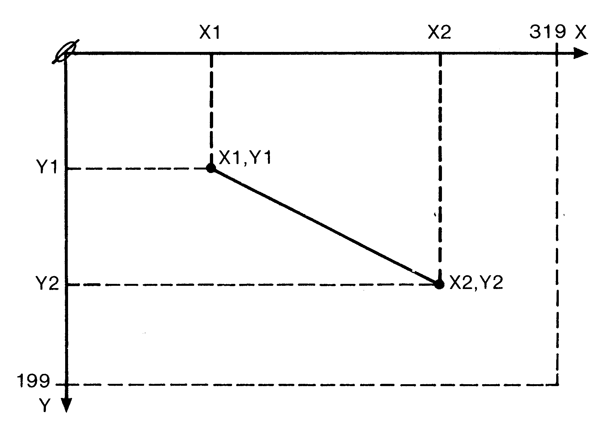
A ist eine Kennzahl für die Quelle, aus der die Farbe der Zeichnung herrührt. A hat dabei folgende Bedeutung:
A = 0 Hintergrundfarbe
A = 1 Vordergrundfarbe
A = 2 Multicolorfarbe 1
A = 3 Multicolorfarbe 2
Dieser Befehl ist sehr vielseitig verwendbar. Es ist beispielsweise möglich, einen Linienzug über weitaus mehr als nur zwei Punkte zu führen. Der Befehl
DRAW1,X1,Y1 TO X2,Y2 TO X3,Y3 TO X4,Y4 TO X5,Y5 TO X1,Y1
kann so ein grafisches Gebilde wie in Bild 11 erzeugen. Lautet der Befehl
DRAW1,X1,Y1
dann wird lediglich der Punkt X1,Y1 gezeichnet. Schreibt man dagegen den Befehl als
DRAW 1 TO X1,Y1
dann dient als Ausgangspunkt die aktuelle Grafikcursorposition. Den Grafikcursor werden wir beim LOCATE-Befehl noch kennenlernen. Von dieser Position aus wird dann eine Linie nach X1,Y1 gezogen.
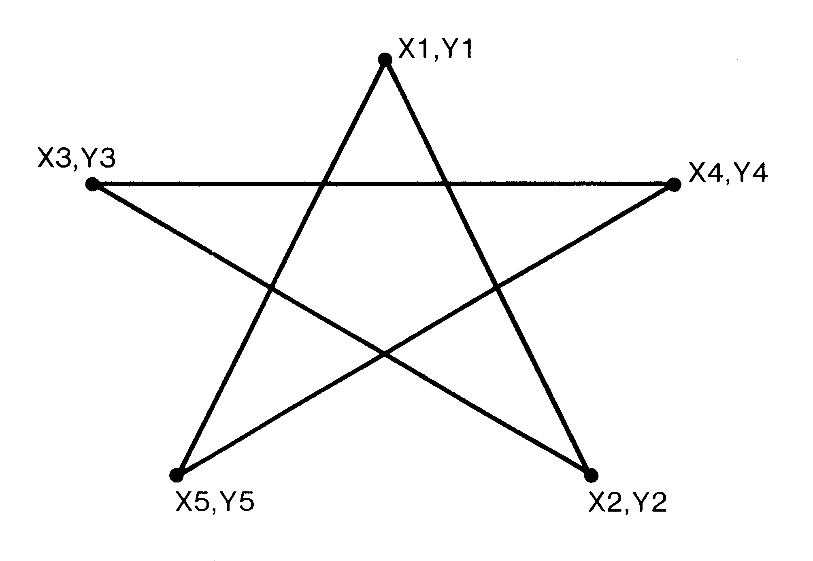
Nach der Ausführung der verschiedenen DRAW-Befehle befindet sich der Grafikcursor an dem Punkt, der durch die letzte Koordinatenangabe charakterisiert wird.
Läßt man übrigens die Farbkennung weg, schreibt also beispielsweise
DRAW ,X1,Y1 TO X2,Y2
dann wird die Linie in der Farbe gezeichnet, die im vorangegangenen Zeichenbefehl verwendet wurde. Vielleicht erinnern Sie sich noch an die Speicherstelle $83 COLSEL? Dort befindet sich immer noch vom vergangenen Befehl her die Farbkennung.
BOX
Mit diesem Zeichenbefehl können Rechtecke erzeugt werden. Auch hier sind wieder eine ganze Menge Variationen möglich. Die Syntax des BOX-Befehls ist:
BOX A,X1,Y1,X2,Y2,W,F
A ist wieder – wie schon beim DRAW-Befehl – die Farbquelle. Ebenso wie dort kann man A auch weglassen und das Rechteck erhält dieselbe Farbe wie das zuvor gezeichnete Grafikobjekt.
Bild 12 erläutert die Bedeutung der Eckkoordinaten X1,Y1 und X2,Y2.
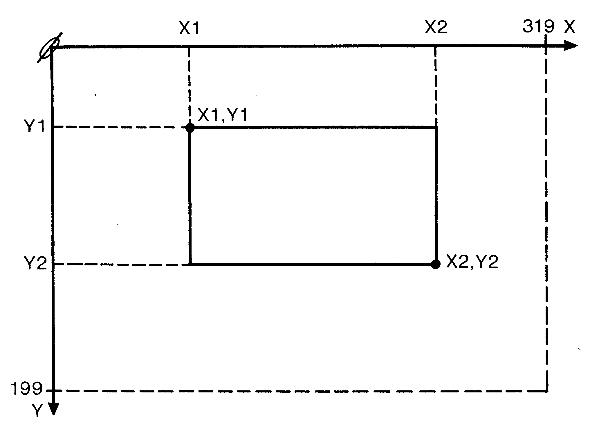
X1,Y1 sind also die Koordinaten der linken oberen Ecke, X2,Y2 diejenigen der rechten unteren. Wir werden darauf gleich noch einmal zurückkommen.
W ist ein Winkel (in Grad angegeben!), um den das Rechteck zu drehen ist. Die Drehung erfolgt um den Mittelpunkt des Rechtecks im Uhrzeigersinn (siehe Bild 13).
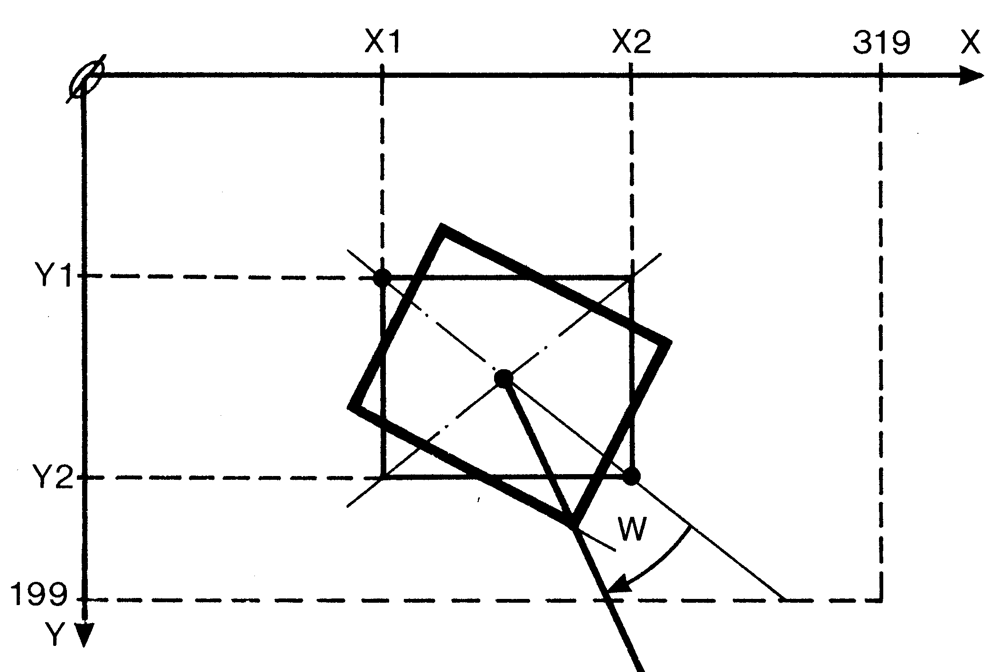
W darf alle Werte zwischen 0 und 65535 annehmen.
F ist eine Kennung, die festlegt, ob das Rechteck ausgefüllt werden soll:
F = 0 Nicht ausfüllen
F = 1 In der gewählten Farbe ausfüllen.
Interessant ist, was geschieht, wenn man Koordinaten eingibt, die unlogisch erscheinen. Beispielsweise in
BOX 1,200,100,60,60
wurden die Eckpunkte vertauscht. Der Computer wählt sich selbst die richtigen Ecken aus und zeichnet die Gestalt, die wir bei der richtigen Reihenfolge erhalten hätten, also
BOX 1,60,60,200,100
Würfeln wir die Koordinaten vollends durcheinander (siehe Bild 14).
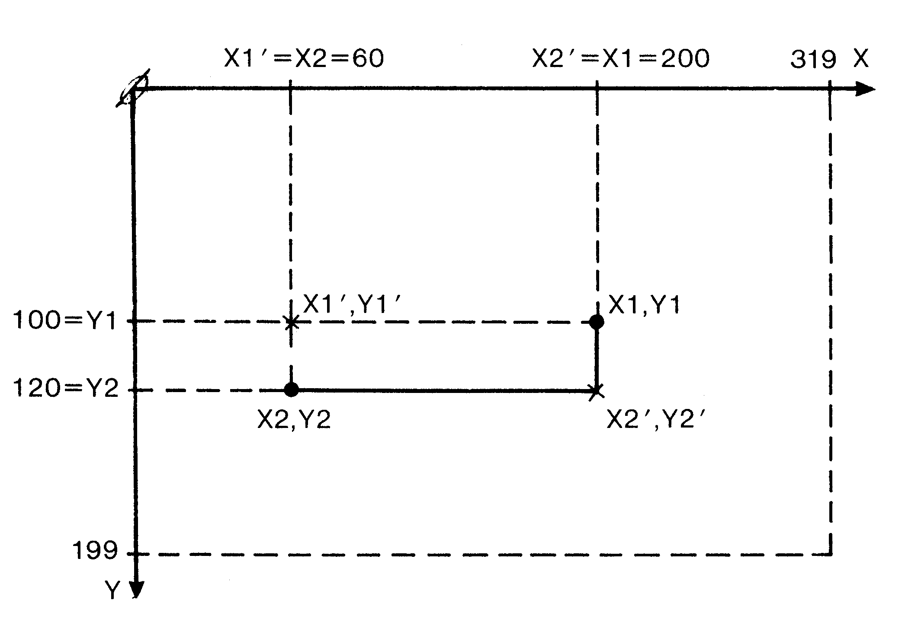
BOX 1,200,100,60,120
gibt die linke untere und die rechte obere Ecke an. Gezeichnet wird vom Computer dennoch das richtige Rechteck (mit den Ecken X1',Y1' und X2',Y2'), als hätten wir ihm befohlen
BOX 1,60,100,200,120
Es scheint, als gäbe es keinen Unterschied bei den verwürfelten Koordinatenangaben. Da existiert aber doch einer! Wir haben bisher den Grafikcursor nicht berücksichtigt. Der steht nämlich immer nach der Zeichnung am Punkt X2,Y2. Das bedeutet, daß er im Fall
BOX 1,200,100,60,120
auf dem Punkt 60,120 steht, wohingegen er im anderen Fall bei 200,120 zu finden wäre.
Bei einer Drehung des Rechtecks durch einen Wert W wird der Grafikcursor nicht mitgedreht. Er bleibt stur bei X2,Y2 stehen.
Noch nicht ausdrücklich erwähnt wurde die Möglichkeit, für den Fall, daß sie nicht benötigt werden, die Größen W und F einfach wegzulassen. Sie werden dann beide auf 0 gesetzt. Man kann aber auch X2 und Y2 weglassen. Das zu zeichnende Rechteck setzt dafür einfach wieder die Koordinaten des Grafikcursors ein.
Ein Beispiel:
BOX 3,100,50,200,80,30,1
zeichnet in der Multicolorfarbe 2 (dazu muß natürlich der Grafikmodus 3 eingeschaltet sein) ein Rechteck, das um 30 Grad um seinen Mittelpunkt im Uhrzeigersinn gedreht wurde und ausgefüllt ist.
CIRCLE
Ein geradezu phantastisch vielseitiger Befehl, nicht nur zum Zeichnen von Kreisen, wie es der Name (circle ist das englische Wort für Kreis) suggeriert. Was man damit alles anstellen kann, werden Sie gleich noch sehen. Wieder kann man über eine lange Parameterliste alle Optionen ausschöpfen. Aber keine Angst, es müssen bei weitem nicht immer alle angegeben werden. Komplett sieht der Befehl so aus:
CIRCLE A, XM,YM, RX,RY, W1,W2, W, S
Der erste Parameter A dient wie schon bei den anderen Zeichenbefehlen zur Festlegung der Farbquelle.
Die Koordinaten XM,YM legen den Mittelpunkt des Objekts fest, das wir zu zeichnen gedenken. Soll es ein Kreis werden, ist es also der Kreismittelpunkt.
RX und RY sind die Halbmesser in horizontaler und vertikaler Richtung. Gedanklich geht man dabei von der Ellipse aus, die ja zum Kreis wird, wenn beide Radien gleich sind. In diesem Fall ist RX = RY und man kann sogar RY weglassen. Bild 15 zeigt, wie die bisher verwendeten Bezeichnungen zu verstehen sind.
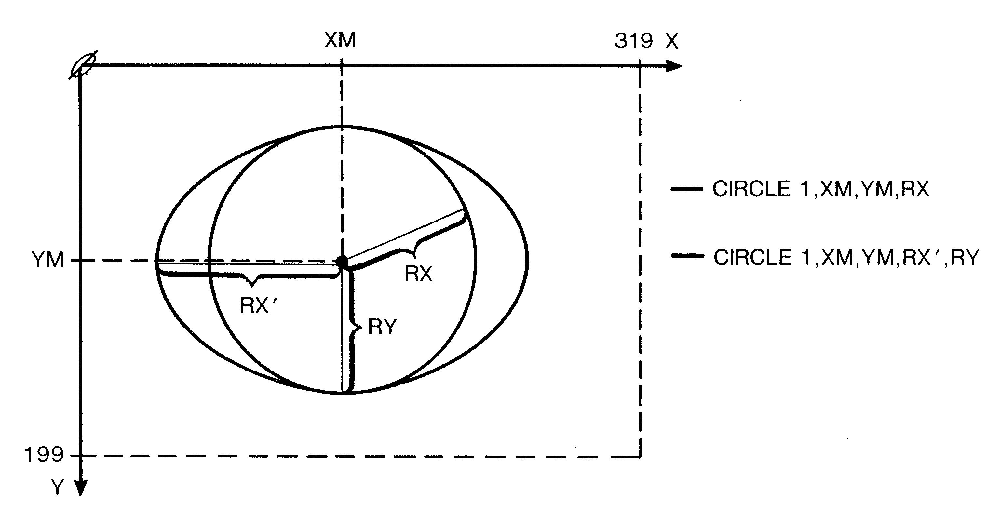
Zwei CIRCLE-Befehle erzeugen hier einen Kreis (CIRCLE 1,XM,YM,RX) und eine Ellipse (CIRCLE 1,XM,YM,RX',RY).
Die Angaben W1 und W2 erlauben die Festlegung eines Bogens aus dem Gesamtobjekt, der zu zeichnen ist. Ausgangspunkt für die Messung der Winkel W1 und W2 ist der obere Scheitelpunkt der Ellipse, die man sich durch die Figur gelegt denken kann. Die Formulierung hört sich wesentlich einfacher an, wenn man von der Zeichnung eines Kreises ausgeht, der im normalen Koordinatensystem liegt. Dann zählt der Winkel vom obersten Kreispunkt an im Uhrzeigersinn, was Bild 16 erläutern soll.
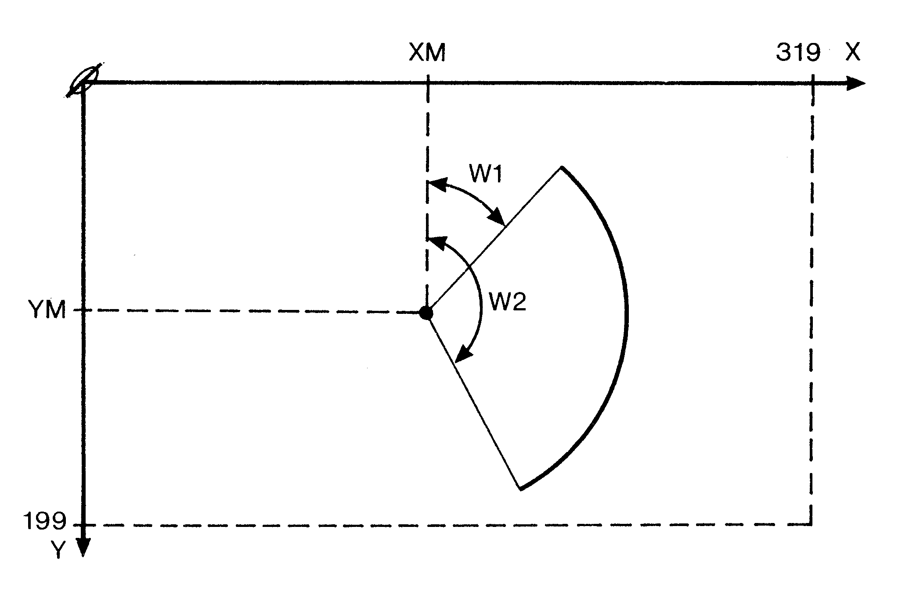
W1 und W2 dürfen ohne Fehlermeldung alle Werte zwischen 0 und 65535 annehmen, wobei allerdings Angaben, die größer als 33024 sind, allerlei Unsinn auf dem Bildschirm erzeugen.
Was geschieht, wenn W1 größer als W2 gewählt wird? Kein Problem: Das Ergebnis finden Sie in einem Beispiel in Bild 17.
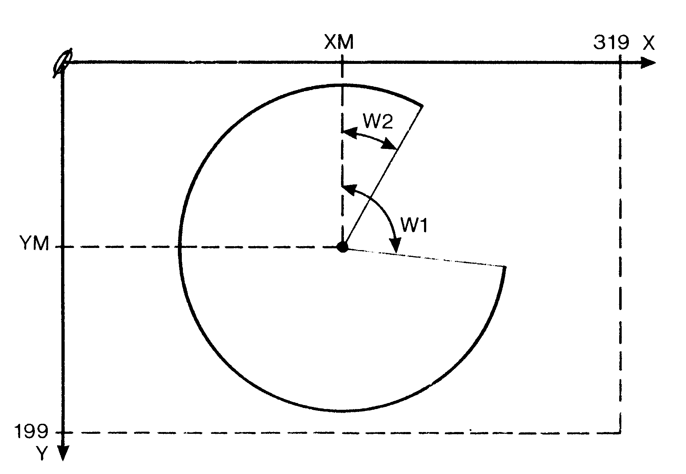
Es wird der Bogen von W1 über 0 hinweg bis W2 gezeichnet.
Ein weiterer Parameter ist W, der Drehwinkel. Ebenso wie beim BOX-Befehl kann auch das durch CIRCLE erzeugte Objekt um den Mittelpunkt im Uhrzeigersinn gedreht werden. Bild 18 zeigt die Verhältnisse dabei.
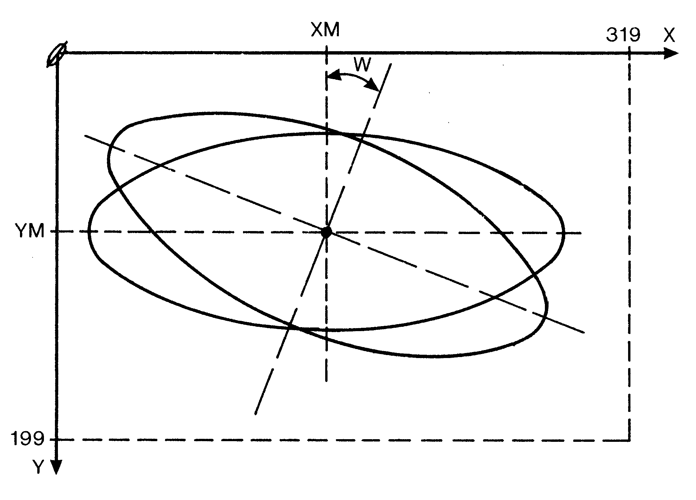
Ohne zu murren, nimmt der Computer Werte zwischen 0 und 65535 für W entgegen.
Der letzte Parameter S kann zwischen 1 und 255 groß sein. Er gibt an, nach welchem Winkel jeweils der nächste Kreis- oder Ellipsenpunkt zu berechnen ist. Die so ermittelten Punkte werden durch Geraden miteinander verbunden. Niedrige Werte von S bedeuten kleine Winkel. So ist der Wert S=2 voreingestellt und die miteinander verbundenen Eckpunkte ergeben den Eindruck eines Kreises (oder einer Ellipse). Erhöht man aber S, dann beginnt der Kreis (ich erspare mir im weiteren den Hinweis auf die Ellipse) allmählich kantig zu werden. Man kann es zwar nicht erkennen, trotzdem ist der schnell gezeichnete Kreis (oder...) in Wahrheit ein 36-Eck, wenn S=10 gewählt wurde. Weitere Polygone ergeben sich zum Beispiel:
S=1 360-Eck
S=2 180-Eck
S=10 36-Eck
S=20 18-Eck
S=30 12-Eck
S=60 6-Eck
Das Bild 19 soll dazu dienen, diese Angelegenheit zu illustrieren.
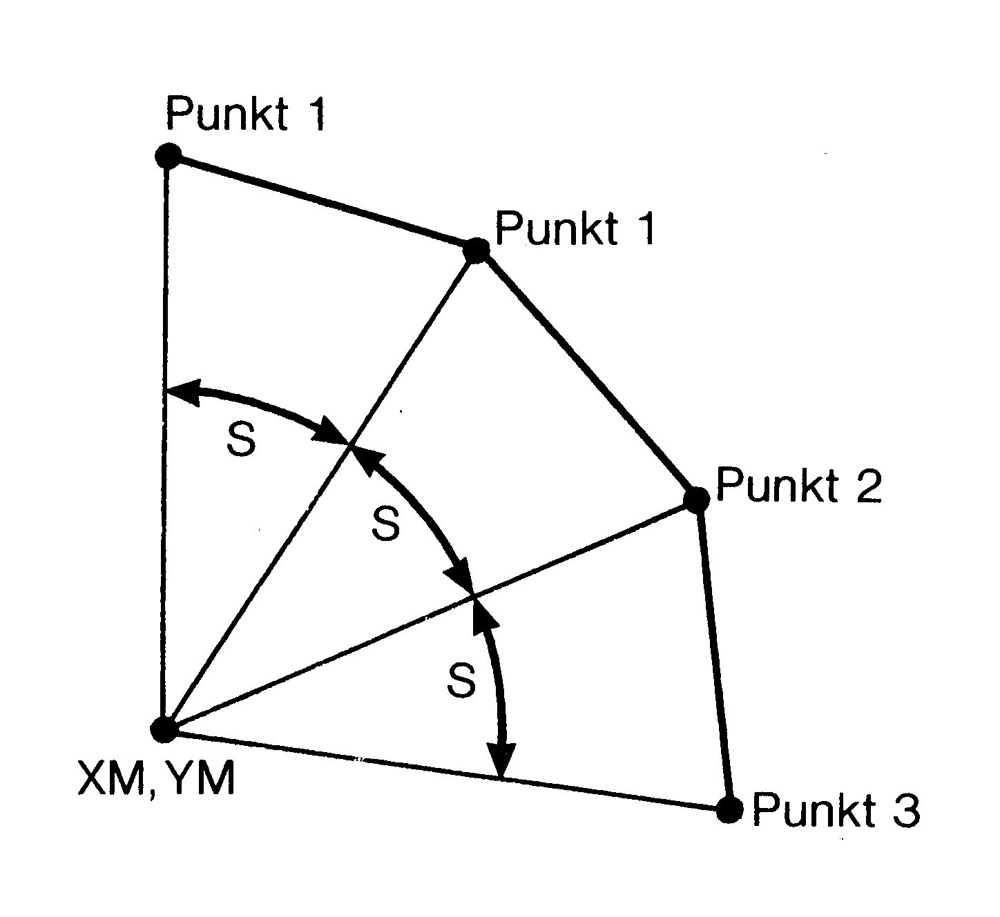
Weil der gesamte Kreis einen Winkel von 360 Grad überstreicht, läßt sich eine Formel angeben, mit der gezielt n-Ecke erzeugt werden können:
S = 360/n
Wenn Sie also ein Dreieck (n=3) erzeugen möchten, müssen Sie S=120 eingeben. Die Formel zeigt uns noch zwei weitere Eigenschaften von S:
— Zum einen kann man sie umdrehen und berechnen, wieviele Ecken ein Polygon bei einem bestimmten S-Wert hat:
n = 360/S
Dabei zeigt es sich, daß für »n« auch allerhand gebrochene Zahlen zustandekommen. Weil es aber beispielsweise kein 7,2-Eck gibt (bei S=50), muß es sich hier um ein krummes 7-Eck handeln.
— Zum zweiten sind Eingaben größer als 180 sinnlos. S=180 führt zum »Zweieck«, also zum Durchmesser des Kreises (siehe Bild 20).
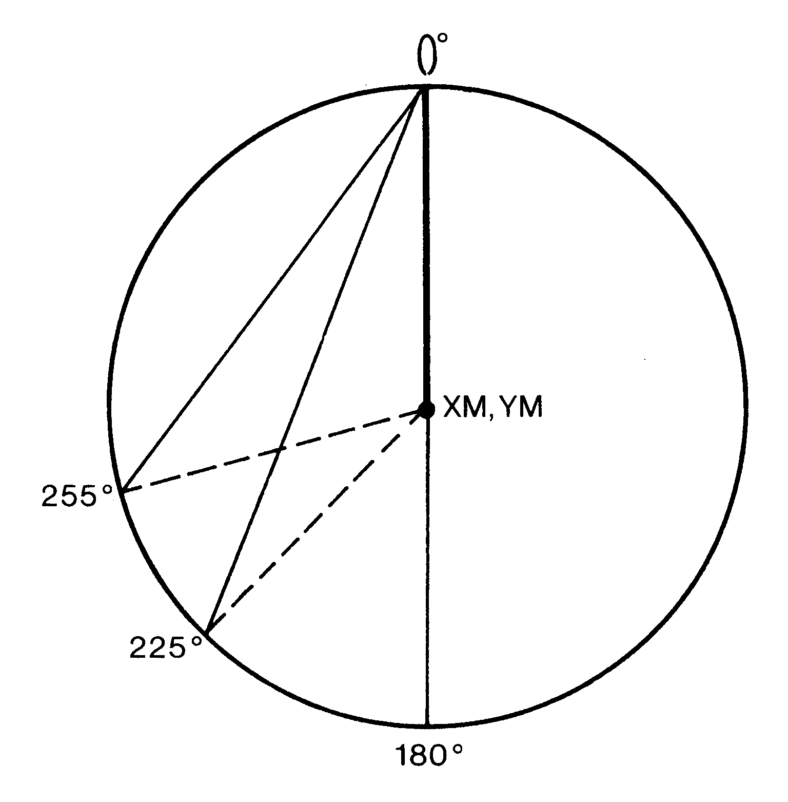
Der Startpunkt ist immer oben (also bei einem Winkel von 0 Grad) zu finden, der Endpunkt liegt auf der Kreisperipherie um 180 Grad demgegenüber verdreht. Ein Weiterzählen um noch einmal 180 Grad führt wieder zum Startpunkt. Wächst S auf noch höhere Werte, dann wird nur noch eine Sehne gezeichnet vom Startpunkt zum Punkt 1, der beispielsweise bei S=225 um 225 Grad, bei S=255 um 255 Grad verdreht auftritt. Ein weiterer Punkt wird hier nicht mehr berechnet, weil damit der Ausgangspunkt bei 0 Grad überschritten würde.
Den Grafikcursor hätten wir fast noch vergessen: Der befindet sich (im Gegensatz zum BOX-Befehl) immer dort, wo der letzte Punkt des CIRCLE-Befehls gesetzt wurde.
Übrigens gilt es noch eine Besonderheit des CIRCLE-Befehls im Multicolormodus zu beachten. Gibt man hier nämlich einen Befehl zum Zeichnen eines Kreises in der Form
CIRCLE 1,XM,YM,RX
ein, wobei ja automatisch RY = RX gesetzt wird, dann entsteht zwar auf dem Bildschirm ein Kreis. Der ist aber falsch, was Sie unschwer erkennen können, indem Sie oben und unten Tangenten anlegen. Das Ganze sähe beispielsweise so aus:
CIRCLE 1,80,100,40:DRAW 1,0,40 TO 159,40
DRAW 1,0,120 TO 159,120
Als gebildete Programmierer sollten wir erwarten, daß diese Geraden als Tangenten den Kreis am oberen und am unteren Rand berühren. Aber weit gefehlt, sie schneiden ihn! Probieren wir dagegen einmal, den Kreis mittels
CIRCLE 1,80,100,40,40
zu zeichnen, dann sollte ja dasselbe herauskommen. Aber das Ergebnis dieser Zeile ist eine Ellipse! Woran liegt das? Die Ursache dafür liegt in der ungleichen Skalierung der X- und der Y-Achse im Multicolormodus. Wenn wir dem Computer den Auftrag erteilen, einen Kreis zu zeichnen, dann zeichnet er ihn – ohne Rücksicht auf Verluste oder Skalierungen oder ähnliche Feinheiten.
PAINT
Damit kann eine von Kurvenzügen umschlossene Fläche ausgefüllt werden. Sie muß aber auch wirklich völlig eingerahmt sein, denn das kleinste Loch in der Hülle führt dazu, daß auch die benachbarte Fläche bemalt wird. Im Befehl
PAINT A, X1,Y1, M
haben die einzelnen Größen folgende Bedeutung:
A ist – wie schon gehabt – wieder die Farbquelle, mit der das Ausmalen geschehen soll.
X1 und Y1 sind die Koordinaten eines Punktes, der in der auszufüllenden Fläche enthalten ist. Gleichzeitig ist das der Startpunkt der Aktion und hinterher liegt genau hier der Grafikcursor.
Ein etwas schwerer verständlicher Parameter ist der Modus M. Ist nämlich M gleich 0, dann wird solange ausgefüllt, bis eine Umrahmung in der Farbe angetroffen wird, die im Parameter A gewählt wurde. Ist dagegen M gleich 1, dann zählt auch jede andere Farbe der Umrandung – sofern sie nur nicht die des Hintergrundes ist – als Grenze des Ausmalens. Befinden wir uns beispielsweise im Grafikmodus 3, dann passiert bei der Befehlskombination:
BOX2,10,10,100,100:CIRCLE3,80,100,40:PAINT 1,85,85
nicht das Ausmalen der Schnittmenge von Kreis und Rechteck, sondern ungerührt um unsere Bemühungen übermalt der Computer alles, was auf dem Bildschirm zu sehen war. Der Grund ist, daß keine Umrahmung in der Farbe mit der Kennung A = 1 vorhanden war (BOX lief mit A=2 und CIRCLE mit A=3) und wir den Modus 0 gewählt haben. Modus 1 hätte unseren Wunsch erfüllt.
PAINT arbeitet im Modus M=1 nicht, wenn am Startpunkt schon eine andere Farbe als die Hintergrundfarbe gefunden wird. Im Modus M=0 dagegen wird immer dann ausgefüllt, wenn dort eine Farbe vorhanden, die von der ausgewählten verschieden ist.
CHAR
Eigentlich kein Grafikbefehl im engeren Sinn ist dieser Befehl zum Drucken eines Textes. Seine interessanteste Anwendung ist aber die Beschriftung von Grafiken, was auf andere Weise (außer in den Splitscreen-Modi) nicht möglich ist.
CHAR A, XT,YT, A$, R
bildet einen Text A$ in der Farbe der Quelle A ab. Das erste Zeichen befindet sich bei den Koordinaten XT,YT. Das Koordinatensystem, das hier eine Rolle spielt, ist das im Textmodus gültige (25 Zeilen zu je 40 Spalten oder aber 80 Spalten). A$ kann jede beliebige Kombination von gültigen Zeichen enthalten. In den Grafik-Modi werden allerdings die Steuerzeichen als grafische Zeichen mitgedruckt.
R ist eine Kennzahl, die es erlaubt, den Text normal oder revers darzustellen:
R = 0 Normaldarstellung
R = 1 Reversdarstellung
Sollte der Text nicht in einer Zeile Platz finden, dann wird er in der nächsten fortgesetzt, also ein Verhalten, wie wir es auch vom PRINT-Befehl her kennen.
Im Multicolormodus sehen die Zeichen häufig etwas merkwürdig aus. Die Zeichenmuster sind ja nicht zur Darstellung im Bitpaarmodus konstruiert. Soll ein Text in der Multicolorfarbe 2 gedruckt werden, dann ist A auf 0 und R auf 1 zu setzen. Soll dagegen die Multicolorfarbe 1 verwendet werden, hält man die Farbquelle A auf 1 und für R wählt man den Wert 0. So steht es jedenfalls im Handbuch (auf den Seiten 4-28 und 4-29). Zumindest mein C 128 folgt diesem Rezept nicht, sondern es genügt, einfach A entsprechend der gewünschten Farbquelle (also 0,1,2,3) zu wählen.
Der Grafikcursor bleibt übrigens vom CHAR-Befehl unbeeindruckt.
LOCATE
Wir haben bei den bisher untersuchten Befehlen immer wieder einen Grafikcursor und dessen Verhalten bei den verschiedenen Operationen erwähnt. Sie haben diesen Cursor aber noch nie zu Gesicht bekommen – werden Sie auch nie, denn er führt sein verborgenes Leben nur in einigen Speicherstellen, nie aber auf dem Bildschirm. Trotzdem ist er recht nützlich. Er dient gewissermaßen als Merkstelle für bestimmte Punktkoordinaten:
— Als Startpunkt bei DRAW
Beispielsweise für DRAW 1 TO X2,Y2
— Als Eckpunkt bei BOX
— Als Mittelpunkt bei CIRCLE: Laut Handbuch soll man die Koordinaten XM,YM weglassen können und dafür werde automatisch der Ort des Grafikcursors eingesetzt. Leider war das bei meinem C 128 nicht nachvollziehbar. Es ergab sich nur allerlei Unsinn auf dem Bildschirm.
— Als Startpunkt für PAINT: Auch hier kann man ohne Angabe der Startpunktkoordinaten Flächen ausmalen, denn es wird automatisch der Ort des Grafikcursors verwendet.
LOCATE X,Y führt diesen Grafikcursor an den durch die Koordinaten X,Y definierten Punkt.
RDOT
Wollen Sie erfahren, wo sich der Grafikcursor im Augenblick befindet, dann dient dieser Befehl Ihrem Wunsch. Das Argument von RDOT(n) hat folgende Bedeutungen:
n = 0 liefert die aktuelle X-Position.
n = 1 ergibt die aktuelle Y-Position des Grafikcursors.
n = 2 macht eine Aussage über die aktuelle Farbquelle.
Die Koordinatenwerte, die RDOT-Anfragen ergeben, beziehen sich immer auf die grundlegenden Koordinatensysteme. Im hochauflösenden Grafikmodus stammen die Werte daher immer aus einem System, dessen X-Werte zwischen 0 und 319 liegen und dessen Y-Werte von 0 bis 199 reichen. Im Multicolormodus geht die X-Achse nur bis 159. Das im Auge zu behalten ist besonders für den nun folgenden Befehl wichtig:
SCALE
Mittels
SCALE n, Xmax, Ymax
können wir neue Koordinatensysteme auf unserem Bildschirm definieren. Die Kennzahl n kann zwei Optionen anwählen:
n = 0 Das reguläre System ist eingeschaltet:
Grafik-Modi 1 und 2:
X von 0 bis 319, Y von 0 bis 199
n = 1 Ein verändertes System ist nun Bezugssystem geworden.
Wenn durch n=1 die neue Skalierung eingeschaltet wurde, gibt es zwei Möglichkeiten. Schreibt man lediglich SCALE 1, dann hat man ein Koordinatensystem gewählt, dessen X- und Y-Koordinaten jeweils von 0 bis 1023 reichen. Der zweite Weg ist es, selbst die Reichweiten der Skalen festzulegen. Das geschieht durch die Angaben von Xmax und Ymax, den Höchstwerten auf der jeweiligen Achse. So wählt im Grafikmodus 1 der Befehl
SCALE 1, 400, 300
ein System, dessen X-Achse von 0 bis 400 und Y-Achse von 0 bis 300 reicht (siehe Bild 21).
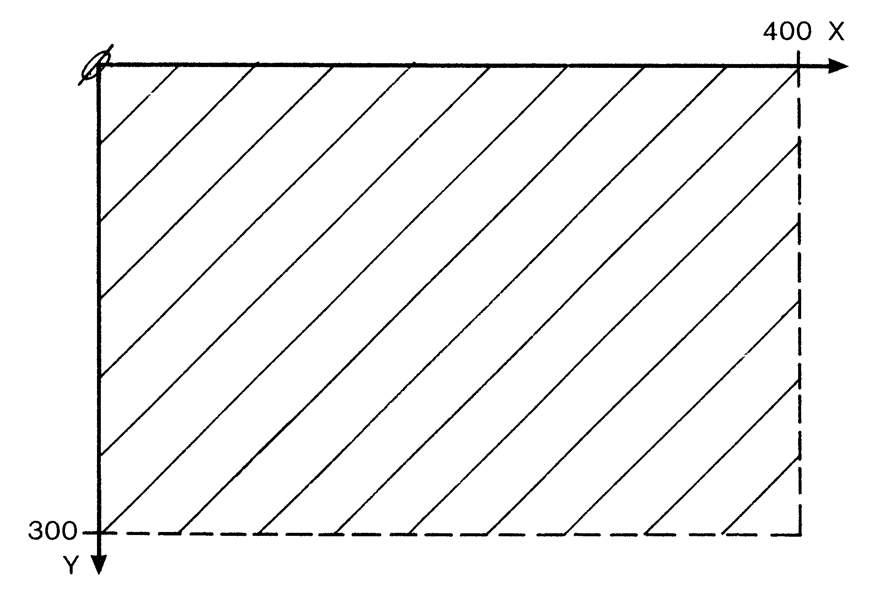
Die Werte Xmax müssen größer als 320 gewählt werden, die für Ymax größer als 200. Es ist so also nicht möglich, verkleinerte Systeme zu erzeugen. Im Gegensatz zu den Handbuchangaben, die nur Werte bis 1023 erlauben, ist es tatsächlich möglich, sowohl Xmax als auch Ymax bis 32767 anzugeben.
Im Multicolormodus ist zu beachten, daß weiterhin auf der X-Achse immer Bit-Paare dargestellt werden. Im Grafikmodus 3 oder 4 erzeugt daher der Befehl
SCALE 1, 400, 300
ein System, dessen X-Koordinaten von 0 bis 200 und dessen Y-Koordinaten von 0 bis 300 reichen (siehe Bild 22).
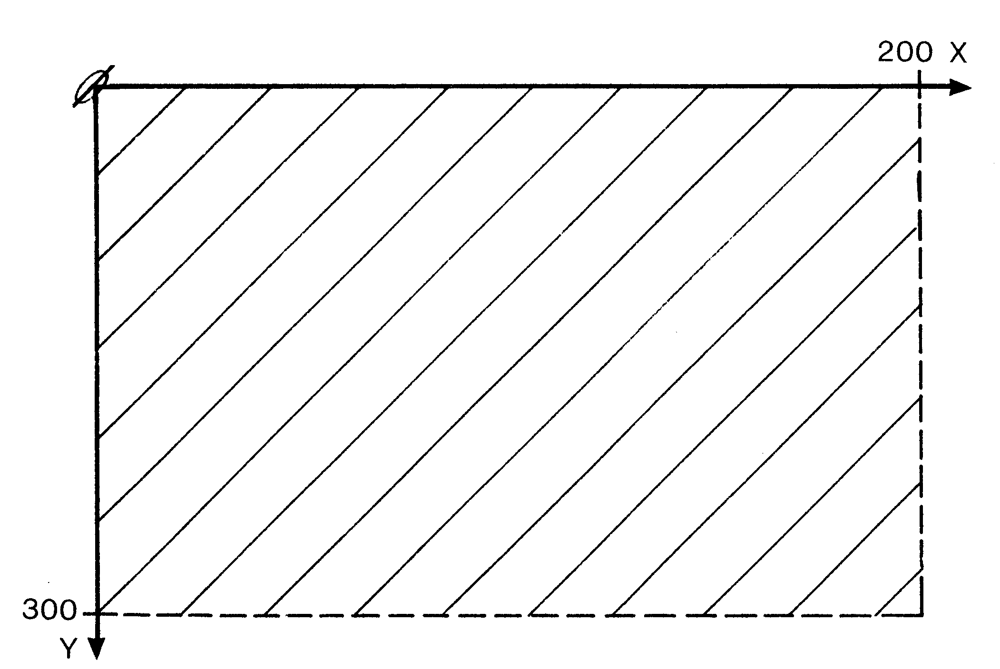
Natürlich werden weiterhin die Abbildungen auf dem Bildschirm mit einer Auflösung von insgesamt 64000 Punkten (oder 32000 im Multicolormodus) dargestellt. Die Bit-Map bleibt unverändert. Lediglich der Berechnungsweg zur Darstellung der Punkte verändert sich. Etwas unglücklich werden viele Anwender des C 128 darüber sein, daß der SCALE-Befehl keine weitergehenden Umstellungen des Koordinatensystems ermöglicht. Wünschenswert wäre sicherlich die Möglichkeit gewesen, den Ursprung zu verschieben (wie es der TRS-Befehl der Grafikerweiterung HIRES-3 für den C 64-Modus erlaubt). Durch diese mindere Ausstattung kommt dem SCALE-Befehl nicht die große Bedeutung zu, die er haben könnte, denn jeder Anwender muß die langwierigen Transformationen weiterhin programmieren.
SCALE hat auch Einfluß auf das Ergebnis eines CIRCLE-Befehls. Ebenso, wie wir es vorhin beim Multicolormodus beobachten konnten, wo ohne Rücksicht auf den anderen Maßstab der Y-Achse ein Kreis gezeichnet wurde, findet das hier in allen Grafik-Modi statt. Wenn also der richtige Kreis – das heißt derjenige, der bei allen Maßstäben in Y-Richtung den gleichen Durchmesser aufweist wie in X-Richtung – gezeichnet werden soll, muß das nun immer durch den CIRCLE-Befehl mit zwei Radienangaben geschehen. Das sollen Ihnen die Bilder 23 und 24 erläutern.
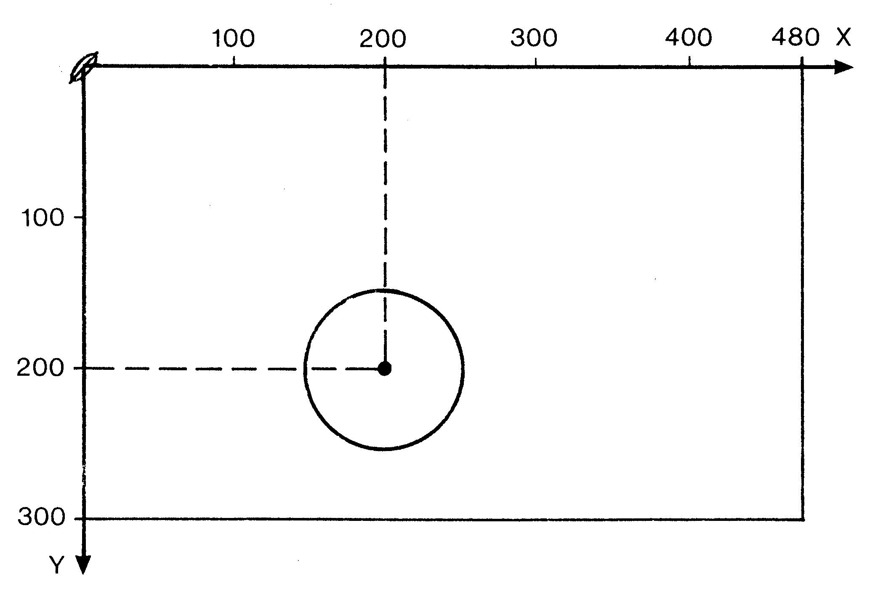
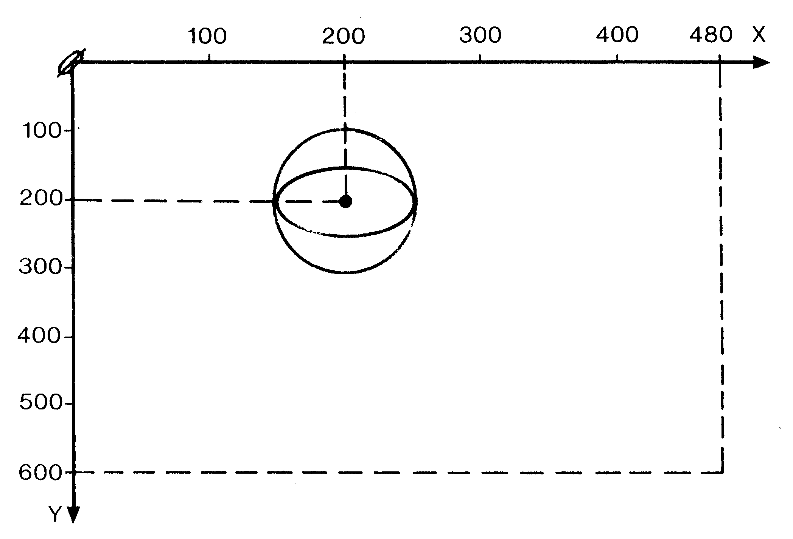
Die Verhältnisse in diesen Abbildungen beziehen sich auf die Grafik-Modi 1 und 2. Das Achsenverhältnis im Multicolormodus ist durch den Faktor 2 in X-Richtung verändert. Man sollte also festhalten, daß immer dann unverzerrte Bilder zustandekommen, wenn die Achsenverhältnisse wie folgt sind:
Grafik-Modi 1 und 2:X:Y = 1.6
Grafik-Modi 3 und 4:X:Y = 3.2
Der SCALE-Befehl kann – nebenbei bemerkt – innerhalb eines Programms oder bei ein und demselben Bildschirm – mehrfach angewendet werden. Das ergibt interessante Effekte.
SCNCLR
»SCreeN CLeaR« ist englisch und heißt etwa »Bildschirm freimachen«. Das bedeutet, daß in den Text-Modi der Speicherbereich ab $400, in den Grafik-Modi sowohl die Bit-Map als auch das Farb-RAM ab $1C00 gelöscht, beziehungsweise mit Leerzeichen oder Farbcode beschrieben werden. Welche Bereiche gelöscht werden, welche Bildschirme also, entscheidet das Argument von SCNCLR n. Die Zuordungen von »n« sind hier die gleichen, die auch beim GRAPHIC-Befehl verwendet werden.
Ein gerade sichtbarer Grafik-Bildschirm ist auch löschbar ohne Angabe eines Arguments, SCNCLR genügt in diesem Fall. Sollte im Textmodus ein Fenster mittels WINDOW definiert sein, dann bezieht sich der Löschbefehl auf den Fensterinhalt.
Bei der Anwendung des SCNCLR-Befehls in den Grafik-Modi muß bedacht werden, daß für den Multicolormodus und für den hochauflösenden Modus dieselbe Bit-Map benutzt wird. Nach SCNCLR3 ist also auch ein im Grafik-Modus 1 sinnvolles Bild verschwunden.
WIDTH
»Width« ergibt aus dem Englischen ins Deutsche übersetzt den Begriff »Breite«. Gemeint ist damit die Strichstärke, in der Zeichenbefehle auf dem Bildschirm realisiert werden.
Mit WIDTH 1 schaltet man die normale Strichdicke ein, mit WIDTH 2 wird allen grafischen Objekten die doppelte Strichbreite zugeordnet.
Alle Zeichenbefehle nach einem WIDTH-Befehl führen dann zur darin angegebenen Strichstärke.
RCLR
Dieser Befehl bildet das Gegenstück zum COLOR-Befehl. Mittels RCLR n ist es möglich, festzustellen, welche Farbzuordnungen zu den verschiedenen Quellen getroffen worden sind. »n« ist dabei eine Kennzahl mit derselben Bedeutung wie der erste Parameter der COLOR-Anweisung.
PRINT RCLR(2)
gibt also Auskunft über die Farbe, die als Multicolorfarbe 1 definiert wurde.
RGR
Vermutlich relativ selten benötigt, ergibt
PRINT RGR(x)
den aktuellen Grafikmodus. Das Argument x ist hier lediglich ein Dummy, hat also keine Funktion außer der eines Platzhalters. Die sich ergebende Zahl entspricht dem ersten Argument des GRAPHIC-Befehls, gibt also den Grafikmodus an.
Mit diesen Grafikbefehlen haben Sie also ein Werkzeug in der Hand, das bei richtiger Anwendung die tollsten Effekte auf dem Bildschirm ermöglicht.
(Heimo Ponnath/dm)